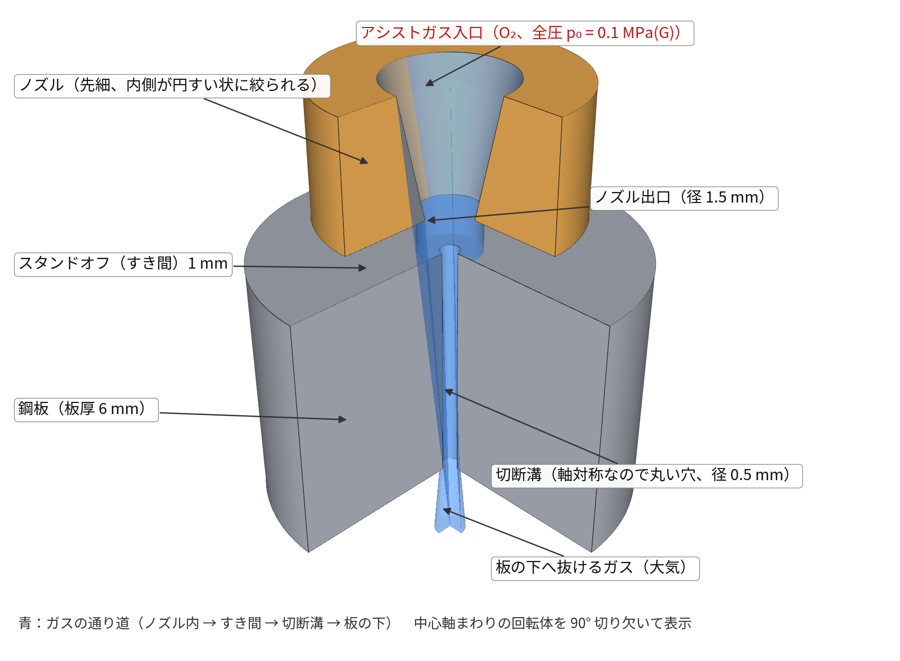
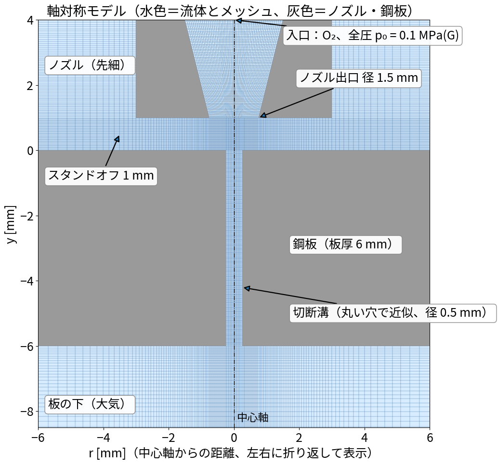
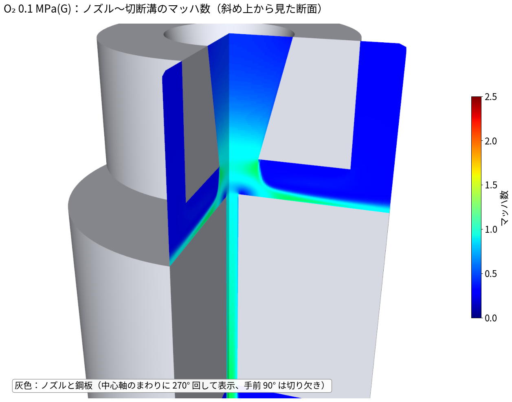
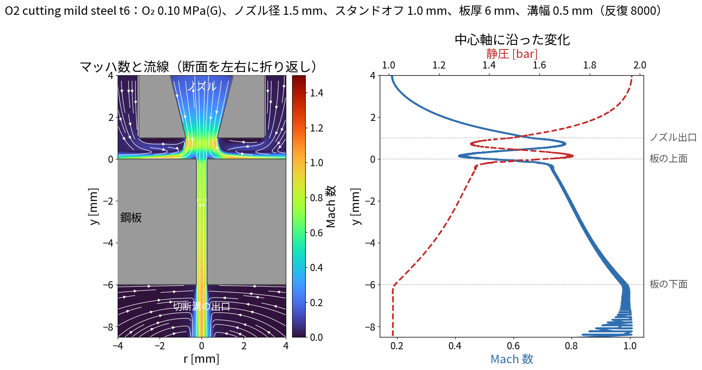
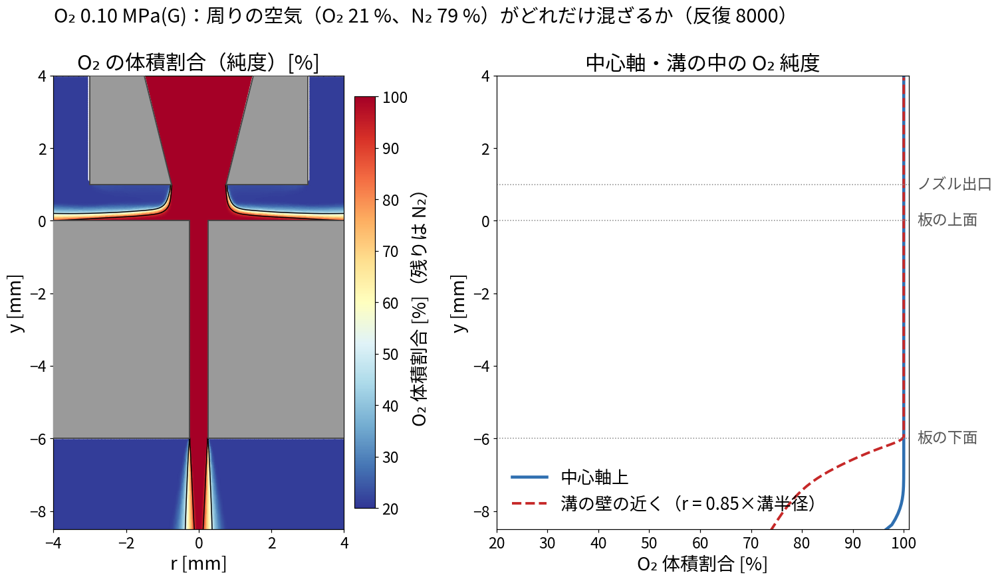
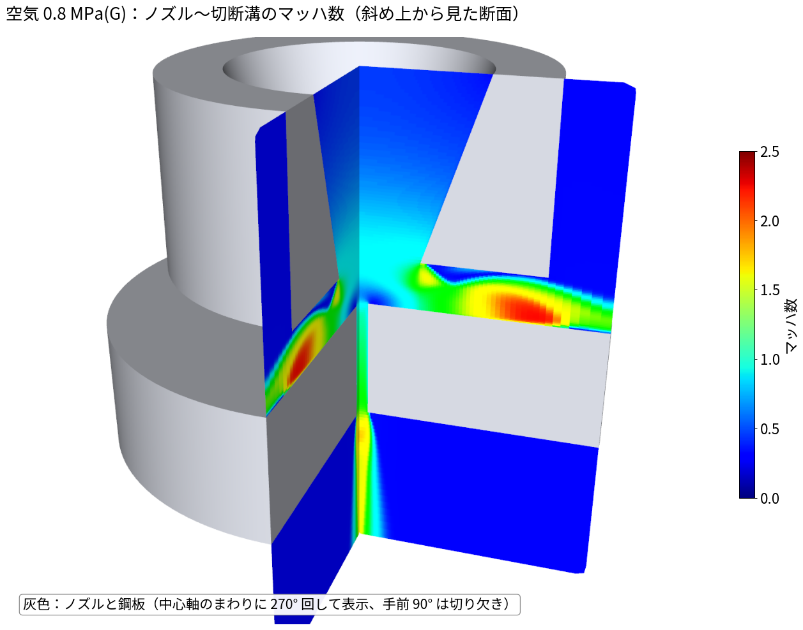
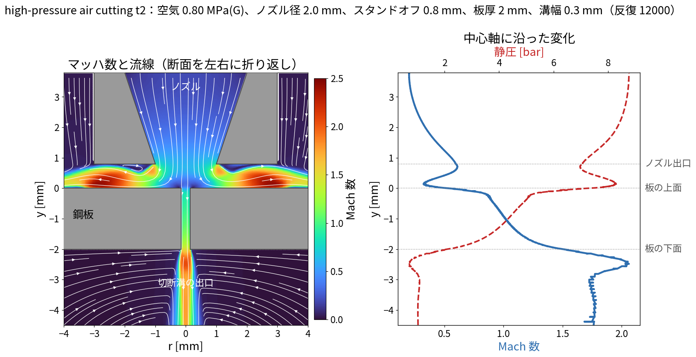
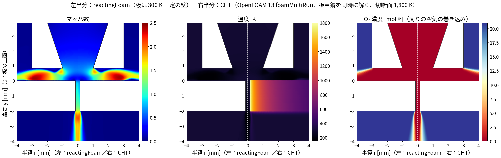
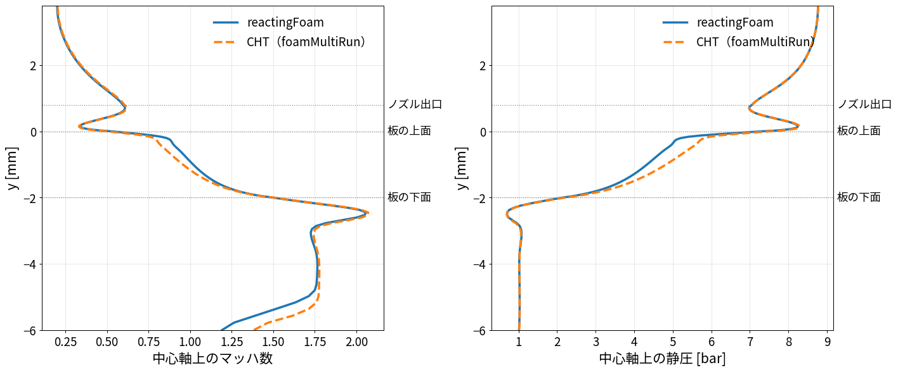
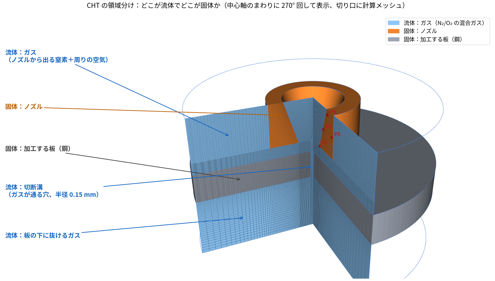

作成日：2026-11-03 OpenFOAM
v2512 ソルバ：reactingFoam（化学反応なし、局所時間刻み LTS
による疑似定常） ソルバ選定・transonic の意味は
01_圧縮性ソルバの選び方とtransonic.md
tools/make_laser_case.py で作る。中心軸（y）まわりの 5°
のくさび形（wedge）で、3 次元の回転体を表す。

断面とメッシュ：

| 境界 | 条件 |
|---|---|
| inlet（ノズル入口） | 全圧を 0 → 1,500
回で目標値まで上げる（uniformTotalPressure）、全温 300
K |
| ambient（外周・上・下） | 大気圧 101,325 Pa、300 K、空気（O₂ 23.3 %、N₂ 76.7 %、質量分率） |
| nozzle・plate（壁） | すべりなし、300 K 一定 |
| ガス | O₂ と N₂ の 2 成分。比熱一定（O₂ 918、N₂ 1040 J/kgK）・理想気体。超音速で温度が下がっても使える |
| 乱流 | k-ω SST |
| run002 酸素切断 | run003 高圧空気切断 | |
|---|---|---|
| 想定 | 軟鋼 板厚 6 mm の酸素切断 | 薄板 2 mm の高圧空気（窒素）切断 |
| ガス | O₂ 100 % | 空気 |
| 圧力（ゲージ） | 0.1 MPa | 0.8 MPa |
| ノズル出口径 | 1.5 mm | 2.0 mm |
| スタンドオフ | 1.0 mm | 0.8 mm |
| 切断溝の幅 | 0.5 mm | 0.3 mm |
| セル数 | 10,525 | 12,270 |
| 反復 | 8,000 | 12,000 |

断面：


tools/plot_species.py）。make_laser_case.py の
YO2_in で簡単にできる。
断面：

rhoCentralFoam（1 成分）と比べる。作成日：2026-11-10 ケース：run010_N2cut_t2mm_CHT_steady_OF13（比べる相手：run008_N2cut_t2mm_reactingFoam）
ここまでの計算は、板を「温度一定の壁」として流れだけを解いていた。 実際の切断では、レーザーで切断面が溶け、その熱が板の中を伝わりながらアシストガスに奪われる。 そこで、アシストガス（混合ガス・超音速）と板（鋼）を同時に解く。 板とガスのあいだの熱の受け渡しは計算で決まるので、熱伝達率を仮定しなくてよい。
| ソルバ（版） | 定常 | 混合ガス | 超音速（transonic） |
固体連成 | 結果 |
|---|---|---|---|---|---|
chtMultiRegionSimpleFoam（ESI v2512） |
○ | ×（rhoThermo＝1 種類のガス） |
×（圧縮性の項もない） | ○ | 空気（1 種類のガス）で試したら、ノズルが音速に達した反復 278
回目で発散（run006） |
chtMultiRegionSimpleFoam（ESI v2606） |
○ | ×（v2512 と同じ。リリースノートにも変更なし） | × | ○ | 試していない |
chtMultiRegionFoam（ESI v2512） |
×（LTS なし。localEuler
にすると「rDeltaT が見つからない」で停止） |
○（rhoReactionThermo） |
×（圧縮性の項はある） | ○ | 本当の時間で進めると、ノズルがチョークし始めるところで時間刻みが
10⁻¹² s 以下に縮んで止まる。空気は 0.18
ms（_failed_run007）、窒素は安定化しても 0.24
ms（run009） |
chtMultiRegionSimpleFoam（Foundation） |
— | — | — | — | v5 までで廃止。v6 以降は chtMultiRegionFoam
が定常も兼ねる |
foamMultiRun（Foundation OpenFOAM
13） |
○（流体は LTS、固体は
steadyState） |
○（multicomponentFluid） |
○ | ○ | 計算できた（run010、12,000 回、4
並列で 23 分） |
foamMultiRun に作り直されている。
multicomponentFluid
は、reactingFoam と同じく
混合ガス・transonic・LTS
に対応している。solid は LTS
には対応していないが、ソースに「LTS のときは steadyState
を使って」とある。固体は定常の熱伝導として解く。Using LTS と
PIMPLE: Operating solver in mixed steady-state/transient mode
と出て、この組み合わせが受け付けられることを確かめた。system/controlDict：領域ごとに使う部品を書く
application foamMultiRun;
regionSolvers
{
air multicomponentFluid; // 混合ガス（O2/N2）、LTS、transonic
plate solid; // 鋼の板、定常の熱伝導
}
endTime 12000; // LTS の反復回数
deltaT 1;流体（system/air/fvSchemes と
system/air/fvSolution）は、reactingFoam の
run003 と同じ設定
ddtSchemes
{
default localEuler; // LTS（局所時間刻み）
}
PIMPLE
{
transonic yes; // 超音速
maxCo 0.2;
rDeltaTSmoothingCoeff 0.02;
alphaTemp 1;
nCorrectors 2;
nNonOrthogonalCorrectors 1;
}固体（system/plate/fvSchemes）は定常
ddtSchemes
{
default steadyState;
}切断面（板の、溝に接する 2 列のセル）を、鋼の融点に近い 1,800 K
に固定する（system/plate/fvConstraints）
laserFront
{
type fixedTemperature;
cellZone laserFront; // topoSet で作る
mode uniform;
temperature constant 1800;
}ガスと板の境目は、両側とも
coupledTemperature（温度と熱流束が等しくなる）
air_to_plate
{
type coupledTemperature;
value uniform 300;
}ESI 版との書き方の主な違い
| 項目 | ESI v2512 | Foundation OpenFOAM 13 |
|---|---|---|
| ソルバの指定 | application chtMultiRegionFoam; と
constant/regionProperties |
application foamMultiRun; と
regionSolvers |
| 物性のファイル | thermophysicalProperties |
physicalProperties |
| 乱流のファイル | turbulenceProperties（RASModel） |
momentumTransport（model） |
| 境目の温度 | compressible::turbulentTemperatureCoupledBaffleMixed |
coupledTemperature |
| 温度の固定・上下限 | fvOptions |
fvConstraints（fixedTemperature・limitTemperature） |
| 環境の読み込み | source /usr/lib/openfoam/openfoam2512/etc/bashrc |
source /opt/openfoam13/etc/bashrc ParaView_TYPE=none（この
WSL では ParaView の確認で止まるため） |
| 項目 | 値 |
|---|---|
| 形 | run003 と同じ（軸対称、ノズル出口 2 mm、すき間 0.8 mm、板厚 2 mm、溝は半径 0.15 mm の穴で近似） |
| アシストガス | 窒素（N₂ 100 %）、0.8 MPa（ゲージ）。周りは空気（O₂ 21 %） |
| 板 | 鋼（密度 7,850 kg/m³、熱伝導率 45 W/(m·K)）。外周（半径 8 mm）は 300 K |
| 切断面 | 1,800 K に固定（レーザーで溶けている状態の代わり） |
| 比べる相手 | run008：同じ条件を reactingFoam
で解き、板は 300 K 一定の壁 |
| メッシュ | ガス 12,270 セル＋板 5,000 セル |
| 計算時間 | run010：4 並列で 23 分（12,000
回）／run008：4 並列で 18 分 |
左半分が reactingFoam（板は 300 K の壁）、右半分が
CHT（板を同時に解く）。

中心軸の上のマッハ数と静圧：

| 量 | reactingFoam（run008） | CHT（run010） |
|---|---|---|
| ノズル流量 | 6.61 g/s | 6.60 g/s |
| 中心軸上の最高マッハ数（溝の下） | 2.06 | 2.07 |
| 板からガスへ移る熱（360°） | —（板は 300 K） | 90.6 W |
| 板の温度 | 300 K（固定） | 切断面 1,800 K → 半径 4 mm で約 600 K |
| 溝の出口の O₂ 濃度 | 0 % | 0 % |
transonic＋LTS
の組み合わせが、reactingFoam
と同じように働いていることが確かめられた。chtMultiRegionFoam
で時間を進める方法（run009）は、時間刻みを小さくし（Courant
数 0.3）、圧力をゆっくり上げ（0.5 ms）、1 ステップに 2
回解き直しても、ノズルの圧力が約 0.4 MPa（ゲージ）になった 0.24 ms
で時間刻みが 10⁻¹² s 以下に縮んで進まなくなった。
transonic
の形がない圧力の式では、チョークと超音速の膨張を安定して解けないことが確かめられた。foamMultiRun（multicomponentFluid＋solid）を使う。source /opt/openfoam13/etc/bashrc ParaView_TYPE=none # Foundation 版 OpenFOAM 13
cd 02_laserAssistGas
python3 tools/make_laser_cht_foundation.py run010_N2cut_t2mm_CHT_steady_OF13 '{"YO2_in": 0.0}'
cd run010_N2cut_t2mm_CHT_steady_OF13 && ./Allrun
reconstructPar -allRegions -latestTime
cd ..
python3 tools/compare_cht_vs_reacting.py docs/img/run010_cht_vs_run008 run008_N2cut_t2mm_reactingFoam run010_N2cut_t2mm_CHT_steady_OF13YO2_in で吹くガスを変えられる：0 は窒素切断、1
は酸素切断、0.233 は空気切断。run011、計算途中）5.5 までの run010
では、ノズルは「断熱の壁」で、ノズルの温度は解いていない。
ノズルの温度上昇を見るために、ノズルも固体の領域にした 3
領域のモデル（run011_nozzleTemperature_OF13_transient）を作った。

coupledTemperature）。| 領域 | 部品（OpenFOAM 13） | 設定 |
|---|---|---|
| ガス | multicomponentFluid |
N₂/O₂ の混合ガス、transonic yes |
| 板 | solid |
鋼（7,850 kg/m³、460 J/(kg·K)、45 W/(m·K)）。切断面は 1,800 K に固定 |
| ノズル | solid |
仮に銅（8,960 kg/m³、385 J/(kg·K)、400 W/(m·K)）。取り付け面は 300 K に固定（仮定） |
現在の状況（2026-11-11）
cd /mnt/d/work/002_CAE/openfoam/20261103_laserAssistGas
python3 tools/make_laser_case.py run002_O2cut_mildSteel6mm '{"RK":0.25,"RN":0.75,"RIN":1.5,"H":1.0,"T":6.0,"p0_gauge":0.1e6,"YO2_in":1.0}'
openfoam2512 -c './run002_O2cut_mildSteel6mm/Allrun'
python3 tools/plot_axisym.py run002_O2cut_mildSteel6mm # images/axisym_Mach_<反復>.pngParaView で見るときは各ケースの post.foam（wedge
なので、Reflect で折り返すか
Rotational Extrusion で回転体にすると見やすい）。